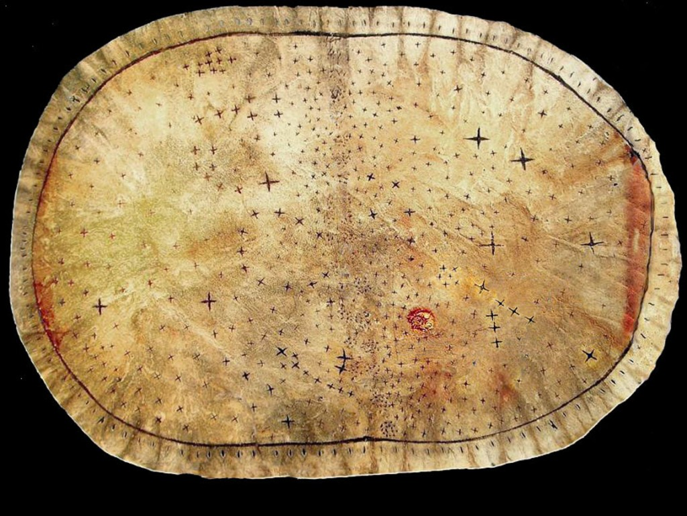
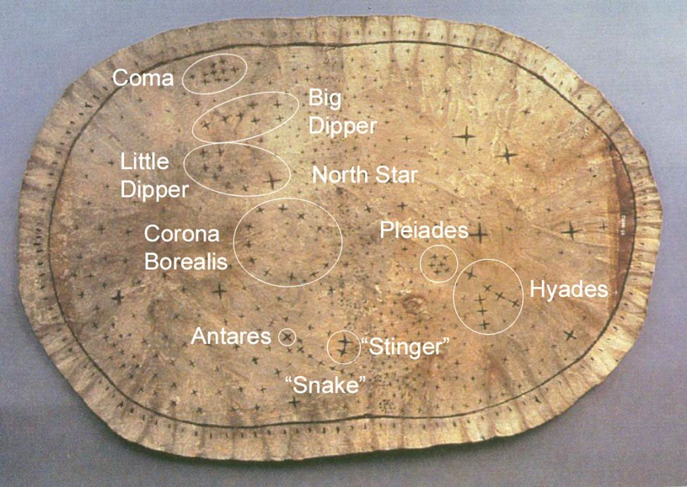

O Mapa Estelar Pawnee
Uma representação do céu noturno baseada no conhecimento astronômico tradicional do povo indígena Pawnee.
O Mapa Estelar Pawnee é uma representação do céu noturno baseada no conhecimento astronômico tradicional do povo indígena Pawnee, nativo das Grandes Planícies da América do Norte (principalmente no atual estado de Nebraska, nos EUA).
O que é exatamente?
Trata-se de um sistema simbólico e espiritual em que os Pawnee organizavam as estrelas, constelações e corpos celestes, atribuindo a eles significados religiosos, sociais e cosmológicos. Ao contrário dos mapas astronômicos ocidentais, o Mapa Estelar Pawnee não era apenas um guia para navegação ou observação astronômica — ele também refletia a estrutura do mundo e da sociedade Pawnee.
Características principais:
-
Cosmologia e Religião
Os Pawnee acreditavam que o céu era o lar dos deuses e dos espíritos ancestrais. Estrelas importantes representavam divindades, e suas posições no céu estavam ligadas a mitos da criação e à ordem do mundo. O céu era visto como um espelho da terra — ou seja, o mundo físico e o espiritual estavam alinhados.
-
Organização das aldeias
Algumas aldeias Pawnee eram organizadas espacialmente para refletir o céu, com tendas ou casas posicionadas de acordo com certas constelações, como as Plêiades. A chamada "Aldeia Celestial" (Sky Village) era um conceito central — a ideia de que a disposição das casas imitava o céu noturno.
-
Constelações Pawnee
Tinham suas próprias interpretações para constelações que também existem na astronomia ocidental. Por exemplo, as Plêiades e Órion tinham grande importância:
• As Plêiades estavam ligadas ao plantio e aos ciclos agrícolas.
• Órion era muitas vezes associado a figuras guerreiras ou caçadoras. -
Calendário agrícola e cerimonial
As observações estelares eram essenciais para determinar épocas de plantio e colheita, além de datas de cerimônias religiosas, como o Ritual da Estrela da Manhã.
Por que é importante?
- O Mapa Estelar Pawnee é um dos exemplos mais sofisticados de astronomia indígena nas Américas.
- Mostra que os povos originários tinham sistemas complexos de conhecimento astronômico, ligados à vida cotidiana, espiritualidade e organização social.
- É um patrimônio cultural e científico de valor imenso, muitas vezes negligenciado nas narrativas tradicionais da história da ciência.

O Mapa Estelar Pawnee em detalhe
O artefato
- O mapa é feito num pedaço de couro de alce (elkskin), em forma oval, com dimensões aproximadas de 15 × 22 polegadas (cerca de 38 × 56 cm).
- Foi identificado como pertencente ao ramo Skiri (Skidi) da tribo Pawnee.
- Faz parte de um conjunto ritual chamado Big Black Meteoric Star Bundle (Pacote Estelar Metéorico Preto).
- O mapa está sob custódia do Field Museum, em Chicago.
Interpretação simbólica vs. astronômica
Há debates acadêmicos sobre o propósito do mapa — se ele era um instrumento prático para observação astronômica ou sobretudo um objeto simbólico/ritual. A interpretação tradicional era a de que ele mapeava constelações e estrelas como um “mapa estelar funcional”. Entretanto, pesquisas posteriores sugerem que ele servia mais como ferramenta mnemônica ritualística, utilizada pelos sacerdotes Pawnee para narrar mitos de origem e cosmologia; os tamanhos das estrelas no mapa nem sempre correspondem aos seus brilhos reais, mas sim à importância mitológica ou simbólica atribuída a elas.
No mapa, constelações como Plêiades tinham papel central no simbolismo e nos mitos Pawnee, sendo posicionadas com destaque. Também são representadas arcos que podem simbolizar horizontes do nascer/por do sol ou bordas celestes simbólicas, além de posições relativas aos pontos cardeais que refletem uma cosmologia estruturada.
Relação com a cosmologia Pawnee
O mapa está intrinsecamente ligado a crenças, cerimônias e à forma como os Pawnee entendiam a ordem do universo. Eles organizavam suas aldeias (disposição das tendas, orientação das entradas) com base nas posições de estrelas e fenômenos celestes — buscando refletir “na terra” aquilo que viam no céu. Havia estrelas da manhã e estrelas do entardecer (o planeta Vênus) com grande papel simbólico e cerimonial. A leitura desse mapa ritual podia ser parte de cerimônias sagradas e de mitos de criação, não sendo mera observação astronômica empírica.
Versão rotulada e observações
Há versões rotuladas modernas que sobrepõem nomes da astronomia ocidental (por exemplo: Big Dipper, Little Dipper, Corona Borealis, Pleiades) para facilitar a ponte entre o mapa Pawnee e a cartografia estelar ocidental. Essas interpretações devem ser usadas com cautela, pois muitos rótulos modernos são aproximativos e servem somente como referência interpretativa.
- Estrelas maiores no mapa nem sempre correspondem às mais brilhantes no céu — muitas vezes o destaque indica importância mitológica.
- As Plêiades são frequentemente citadas nos mitos Pawnee e usadas como marcador para ciclos agrícolas.
- Arcos nas bordas do mapa podem representar brilho atmosférico do amanhecer/crepúsculo, relevantes simbolicamente.
- A Via Láctea aparece como linha central ou eixo, dividindo partes do céu ou servindo como eixo simbólico.